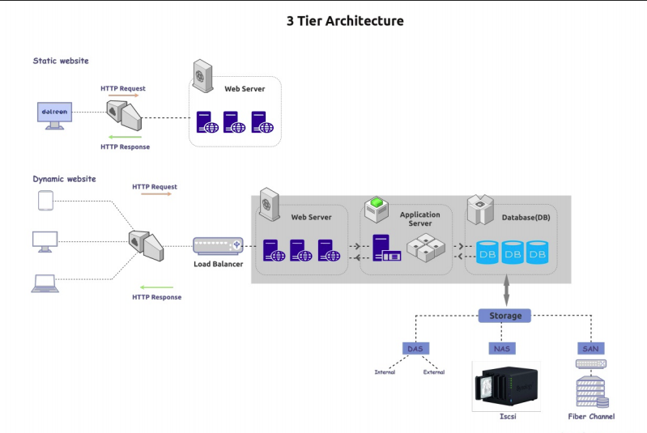

Storage Primer¶
3 Tier Architecture¶

Type Of RAIDs¶
RAID 0 (Striping without parity)¶

RAID 1 (Disk mirroring)¶

RAID 4 (Parity)¶
RAID 5 (Disk Striping with parity)¶

RAID 6 (Parity with disk)¶

RAID 10 (Mirror and Stripe)¶

From Hard Drive To Mount Point¶
In Linux File System¶

Tip
Prerequisites:-
Install mdadm and lvm
example@~ sudo apt-get install madam
In ZFS¶

Steps to be followed to export/import a zpool for SOLARIS/FREEBSD user.
Note
Export a zpool
zpool export datapool
Import the exported pool. Check the imported pool
zpool import
zpool import geekpool.
ZFS Configuration¶
First set up ZFS by installing it:
example@example~ sudo apt-get repository ppa:zfs-native/stable
Now run the following command:
example@example~ sudo apt update
Finally install file system by command:
example@example~ sudo apt-get install -y ubuntu-zfs
The ZFS module are not loaded. Try running ‘/sbin/modprobe zfs’ as a root to load them:
example@example~ sudo /sbin/modprobe zfs
Start by taking two of our hard disks and putting them in a storage pool by running the following command:
example@example~ sudo zpool create -f datapool /devs/sdb /dev /sdc
Note
zpool create is the command used to create a new storage pool, -f overrides any error that occur(such as if the disk(s) already have information on them), datapool is the name of the storage pool, and /dev/sdb /dev /sdc are the hard drive we put in the pool.
Run df -h check the zpool is created or not:
example@example~ df -h
Check status:
example@example~ sudo zpool status
Create a dataset:
example@example~ sudo zfs create datapool/datreon
Set mountpoint by using following command:
example@example~ Sudo zfs set mountpoint=/home/datreon datapool/datreon
Add user to the system by following command:
example@example~ sudo useradd -d /home/datreon -s /bin/bash/datreon datreon
Change ownership the command:
example@example~ sudo chown -R datreon:datreon /home/datreon
Set desired password:
example@example~ sudo password
An Introduction To The ZFS File System(zfs) For Linux¶
The z file system is a free & open source logical volume manager built by SUN Microsystems for use in their Solaris operating system. Some of its most appealing features includes:
Endless scalability¶
It is a 128-bt file system that’s capable of managing zettabytes(one billion terabytes) of data. ano matters how much hard drive space you have, zfs will be suitable for managing it.
Maximum integrity¶
Everything one doees inside of ZFS uses a cheksun to ensure file integrity. One can rest assured that your file and their redudant copies will not encounter silent data corruption. Also, while ZFS is busy quitly checking your data for integrity, it will do automatic repairs anytime it can.
Drive pooling¶
The creator of ZFS want you to think of it as being similar to the way your computer uses RAM. When you need more memory in your computer, you put un another stick and you’re done. No need to spend time partitioning, formatting initializing, or doing anything else to your disks- when you need a bigegr storage “pool,” just add disks.
RAID¶
ZFS is capable of many different RAID levels, all while delivering performance that’s comparable to that of hardware RAID controller. This allows you to save money, makes setup easier, and have access to superiop RIAD levels that ZFS has improves upon.

datreon@~ sudo apt update